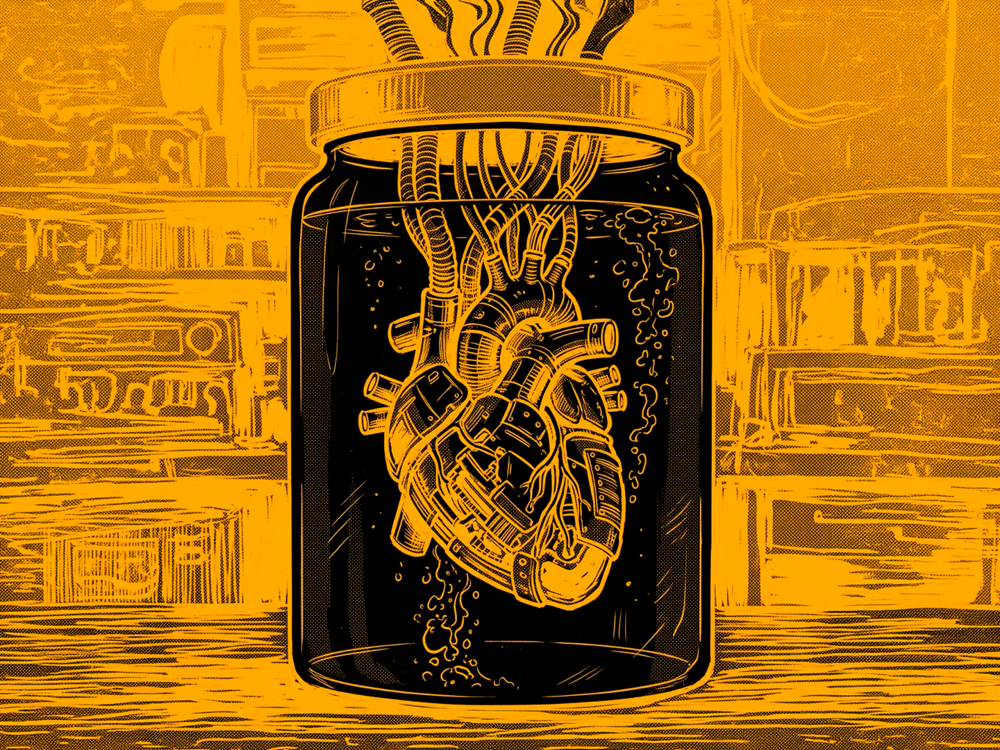

HERMES-AGENT
NOUS RESEARCH // MESSENGER OF THE DIGITAL GODS
>> COGNITIVE LINK ACTIVE <<
V0.17.0 // WSL2/UBUNTU 26.04
SESSION:
SES-????
--/--/---- --:--:--
CPU
--
MEM
--
PROVIDER:
NOUS PORTAL FREE
MODEL:
STEPFUN 3.7 FLASH

STATUS
ONLINE
UPTIME
00:00:00
TOK IN
0
TOK OUT
0
MSGS
0
PORT
:9119
GATEWAY
WA+TG
COST
$0.00
SKILLS
68 OK
TOOLS
32 OK
CRON
ACTIVE
SRXNG
:8888